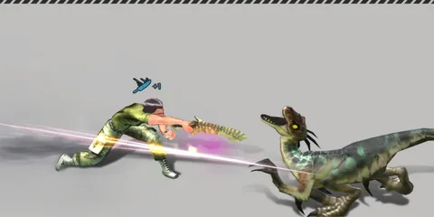

Home › Animals & Combat
 Combat Live
Combat Live
Fight animals bare handed, with melee weapons, bows or crossbows — damage depends on attack, the move you use, and armor penetration against the animal's defense · character combat stats, auto-dodge and auto-block
Some sections on this page are not ready yet
Dinosaurs and wild animals are your food, your materials and your biggest danger. Combat on this server follows the original game's rules: every hit starts from weapon attack × the move's multiplier, then compares your armor penetration with the animal's defense. The colored area an animal draws on the ground while winding up is exactly where it will hit — step out in time and it misses.

What you can do
- Fight bare handed, with one-handed weapons (axe · knife/sword · blunt weapon), two-handed weapons, spears, bows and crossbows
- Use heavy hits, flurries and sweeping moves that hit several animals at once (these must be learned from the combat skill tree — see Skills)
- Stagger an animal so the attack it is winding up is cancelled; make it stunned / collapse to capture it (see Taming)
- Break body parts (head · body · legs · tail) to slow an animal down or weaken its attacks
- Use green weapon tags to make animals bleed (see Tags)
How to fight Live
- Tap an animal to target it, then press Attack — your character walks into range and swings
- A weapon's basic attack is always available · special moves (heavy hit, flurry, stab, sweep, strike, aimed shot, quick shot) must be learned first
- Watch the colored area under the animal while it winds up — run out of it before the attack lands to dodge
- Animals you hit will turn and fight; some herbivores run away instead (see Wild animals)
Weapon types and moves Live
Numbers are the move's damage multiplier (1.0 = normal hit) · several numbers = several strikes
| Weapon | Normal hit | Special moves (multiplier) |
|---|---|---|
| Bare Handed (attack 40) | 1.0 | Kick 0.8 · heavy hit 1.3 · punch combo 0.6 ×3 |
| One-Handed (axe · knife/sword · hammer) | 1.0 | Heavy hit 2.2 · flurry 0.9 / 1.1 / 1.33 · stab 2.8 |
| Two-Handed | 1.0 | Heavy hit 2.2 · sweep 1.1 / 1.6 · strike 2.5 |
| Spear | 1.0 | Heavy thrust 2.2 · dash thrust 1.1 ×3 |
| Bow / Crossbow | 1.0 | Quick shot 1.0 / 1.0 / 1.22 · aimed shot 2.1 |
Damage formula Live
Damage = attack × move multiplier × penetration multiplier × direction multiplier × critical
- Attack = the attack of the weapon in your hand (bare hands 40) + your character's attack bonus (tags, built-in gear bonuses, food, titles, house ambiance) — the same number as on the character screen (Character stats)
- Penetration multiplier = 2.2 to the power of ((your armor penetration − animal defense) ÷ 100) · your armor penetration = the weapon's (bare hands 40) + your character's penetration bonus
- Difference 0 = ×1 · penetration ahead by 100 or more = ×2.2 (cap) · defense ahead by 100 or more = ×0.45 (floor)
- Animal defense grows with level (usually level × 5, e.g. Raptor Lv10 = 50) and is multiplied by the island's Unstable Index
- Hit chance = 50% + move accuracy × 45% (normal moves = 95%) · heavy moves −4% · + 0.1% per point of your character's Accuracy above 100 · always between 35% and 99%
- Critical hit chance 10% (heavy moves 18%) + 1% per Critical point (max 95%) · damage ×1.9
Examples (hit from the front, no critical · no character bonuses)
| Weapon | Move | Target | Damage per hit |
|---|---|---|---|
| Bare Handed | Normal | Compsognathus Lv1 | 42 |
| Bare Handed | Normal | Raptor Lv10 | 30 |
| Stone Axe Lv15 | Normal | Raptor Lv10 | 95 |
| Stone Axe Lv15 | Heavy hit | Raptor Lv10 | 209 |
| Bone Knife Lv15 | Stab | Sabertooth Lv40 | 94 |
| Bone Bow Lv30 | Normal shot | Raptor Lv10 | 163 |
Attack bonuses really count: a Lv30 two-handed stone axe (attack 154 · penetration 134) normal hit on a Lv30 Raptor (from the side) = 136 · with an «attack up» tag level 2 (+36 attack → 190) = 167 (+23%)
Defense Penetration Rate skills Live
Some skill lines give moves a chance for that hit to ignore the animal's defense completely (counted as if the animal had 0 defense — direction, critical and body parts still apply as normal) · skills covering the same move add up
| Skill | Moves affected | Per level (3 levels) |
|---|---|---|
| Backstab (penetration line) | One-handed stab | +10% |
| Sword specialization | One-/two-handed normal and special moves | +6% |
| Spear specialization | All spear moves | +6% |
| Bow specialization | All bow moves | +10% |
Stagger gauge Live
Every hit adds "blow power" to the animal's gauge. When the gauge reaches the species' stagger resistance, the animal staggers and the attack it is winding up is cancelled, then the gauge starts over · if it isn't hit for 4 seconds, the gauge resets
| Blow power per hit | Value |
|---|---|
| Bow · bare hand · one-handed · crossbow (normal hit) | 60 · 80 · 90 · 100 |
| Two-handed (normal hit) · heavy hit · stab | 120 · 150 · 180 |
| Two-handed strike / second sweep swing | 240 |
| Animal | Resistance | One-handed normal hits needed |
|---|---|---|
| Compsognathus · Phenacodus | 140 | 2 |
| Raptor | 420 | 5 |
| Sabertooth · Direwolf | 560 | 7 |
| Mammoth | 1,120 | 13 |
| Tyrannosaurus | 1,575 | 18 |
Hit shapes and areas Live
- Every move has its own hit area (circle · cone · rectangle) and the server checks each hit against it
- Area moves (flurry · sweep · stab · strike · punch combo) can hit several animals at once, up to 6 per swing
- Animal attacks are cones/rectangles taken from their real moves (e.g. a raptor's tail swipe hits behind it) · the yellow/red area on screen = where the hit really lands
Hit direction and body parts Live
- Direction: most animals take ×0.8 from the front · ×1.0 from the sides · ×1.2 from behind (Tyrannosaurus is reversed: front ×1.2 · back ×0.8) · you also take ×1.2 when an animal hits you from behind
- Body parts: each hit lands on the head/body/legs/tail at random depending on the direction. Each part has its own health; when it breaks:
- Broken legs → the animal walks/runs at 60% speed and is easier to hit
- Broken head or tail → the animal hits weaker or misses more often
- Broken parts heal by themselves after 10 minutes · when butchering, items from broken parts come out halved (except meat)
- Axe mastery skills add +6% body-part damage per level
Status effects on animals Live
Some green tags on weapons/gear make animals bleed (health drains over time — if it dies you get a normal carcass) or make animals that hit you miss more often · bleeding does not stagger or stun · see Tags for the tag list
When animals hit you Live
Animals use the same formula: animal attack × 2.2 to the power of ((animal penetration − your defense) ÷ 100) · your defense = the defense of every armor piece + defense bonuses from skills/tags/gear/food/titles (the same value as on the character screen) · armor reduces damage but never blocks it completely; high-level animals hit very hard
| Animal | Your defense | Damage taken |
|---|---|---|
| Raptor Lv10 | 0 | 35 |
| Raptor Lv10 | 50 | 24 |
| Sabertooth Lv40 | 100 | 176 |
| Mammoth Lv50 | 150 | 466 |
| Tyrannosaurus Lv60 | 300 | 952 |
After the damage is worked out there is still a chance to auto-dodge (no damage at all) and to auto-block (less damage) — dodge is rolled first, block only if you didn't dodge
How much defense and blocking help Live
A Lv30 character wearing armor with 122.5 total defense, holding a Lv30 two-handed stone axe (attack 154) · damage per hit (from the side, no critical)
| Animal | Armor only | + all Defense skills (+100 → 222.5) | Armor + block | All skills + block |
|---|---|---|---|---|
| Raptor Lv30 | 54 | 25 | 8 | 1 |
| Sabertooth Lv40 | 176 | 92 | 130 | 46 |
| Mammoth Lv50 | 466 | 391 | 420 | 345 |
- A block removes weapon attack × 0.3 = 154 × 0.3 ≈ 46 per blocked hit · at least 1 damage remains
- All Defense skills + all max-Health skills (Health 472 → 722): a Lv30 Raptor needs 9 → 29 hits to kill you · a Lv40 Sabertooth 3 → 8 · a Lv50 Mammoth still 2
Auto-dodge Live
Every time an animal lands a hit, you have an auto-dodge chance = Evasion × 0.1% (max 15%) — on a dodge you see «Dodged», lose no health, and the Defense category gets the same exp as dodging with a roll
| Evasion | Dodge chance |
|---|---|
| 0 (default) | 0% |
| 30 | 3% |
| 150 or more | 15% (cap) |
- Evasion comes from some gear (e.g. the improved melee combat outfit), tags, titles or food — no skill level gives Evasion yet
- Works with every weapon, bare hands included
Auto-block Live
Hold a melee weapon (sword/knife · axe · blunt weapon · spear) that still has Durability, and when an animal hits you (and you didn't auto-dodge) you have a chance to block and take less damage — no button, nothing to press
- Block chance = 5% + 0.25% × Defense category level (max 20% — exactly at category Lv60)
- Damage removed = the attack of the weapon you hold × 0.3 (your character's attack bonus is not included) · at least 1 damage remains
- On screen it shows as the reduced damage number like a normal hit (no «blocked» text)
- The blocked part wears your weapon by half of the amount blocked (like when you hit) · armor only wears from the remaining damage
- A blocked hit gives Defense exp equal to a roll dodge, instead of the exp for taking a hit
- Bare hands, bows, crossbows = can't block · blocking doesn't stagger the animal or counter-attack
| Defense category level | Block chance |
|---|---|
| 1 | 5.25% |
| 30 | 12.5% |
| 60 | 20% |
Stunned and collapsed Live
Hitting an animal repeatedly drains its stun gauge until it freezes (stunned) or collapses with stars over its head. It can't attack during that time and can be captured — see Taming
Not on this server yet Not ready
Player vs player (PvP) Not ready
Players cannot fight each other · your only enemies are animals
Weapon accuracy / animal evasion / knockback Not ready
The accuracy value on weapons themselves and the animals' evasion are not used for hit chance yet (hit chance comes from the move + your character's Accuracy) · knockback moves have no push effect · there is no manual guard move (only auto-block)